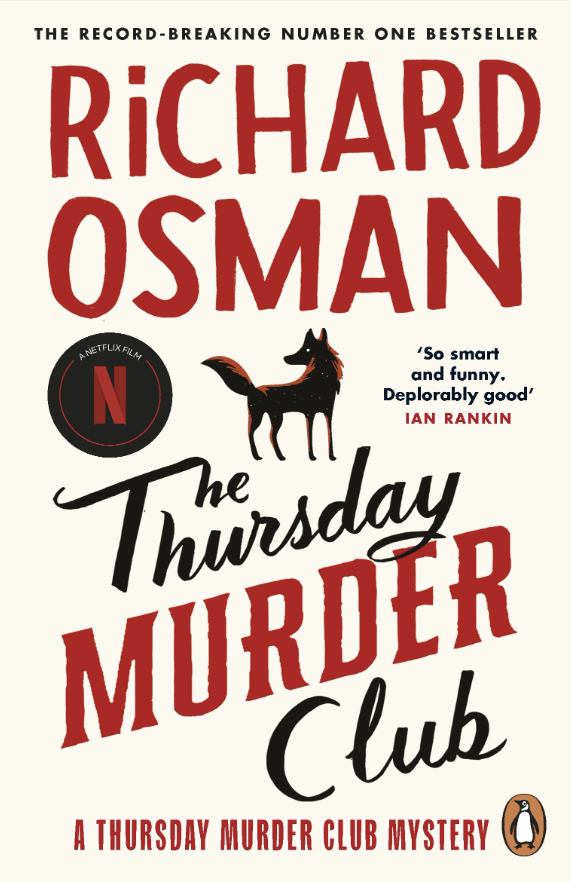
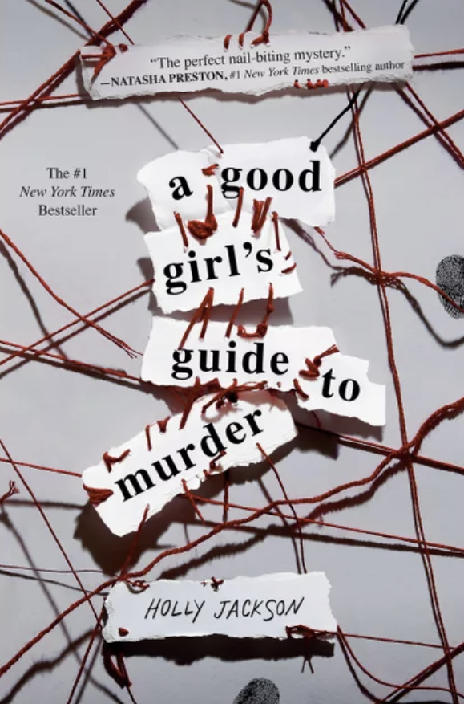
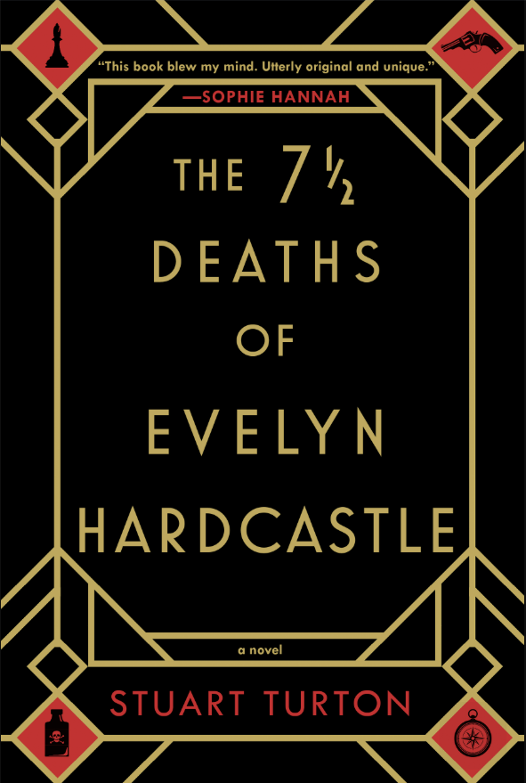
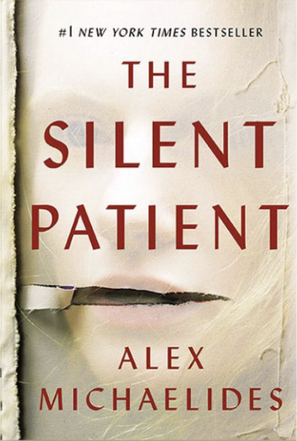
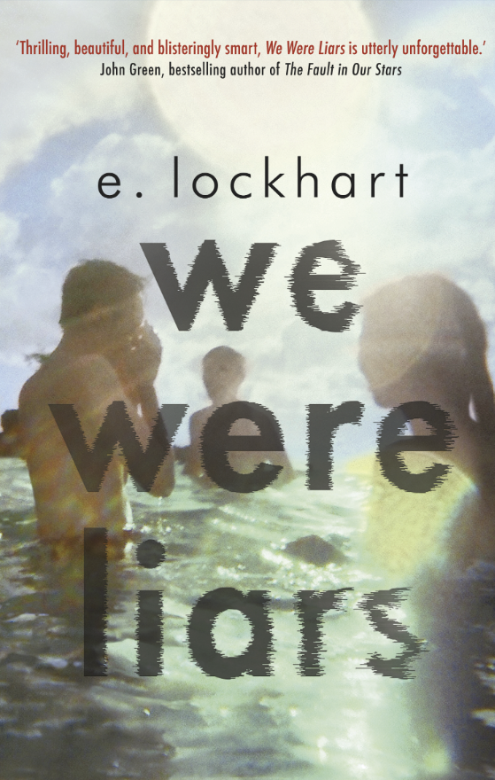
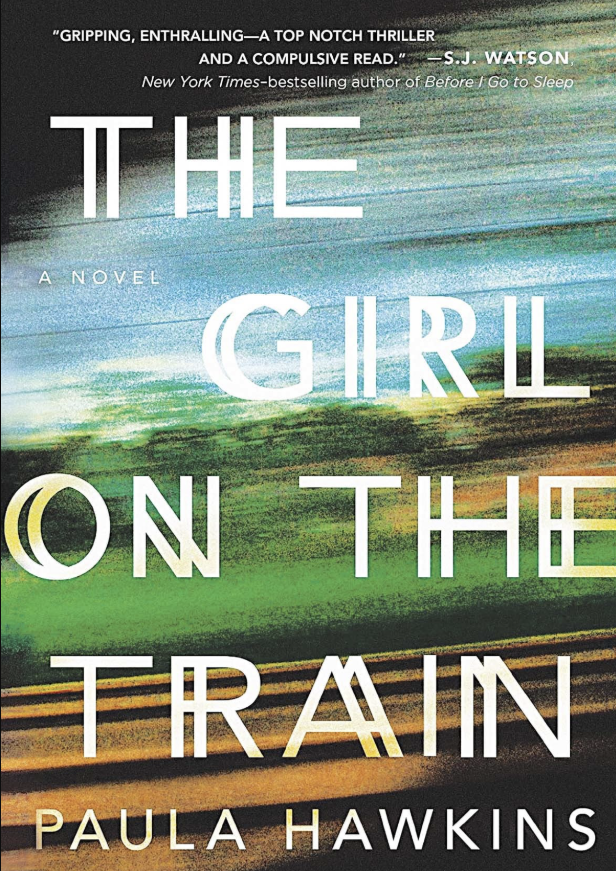
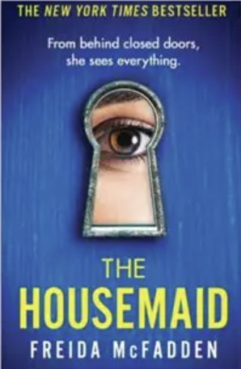
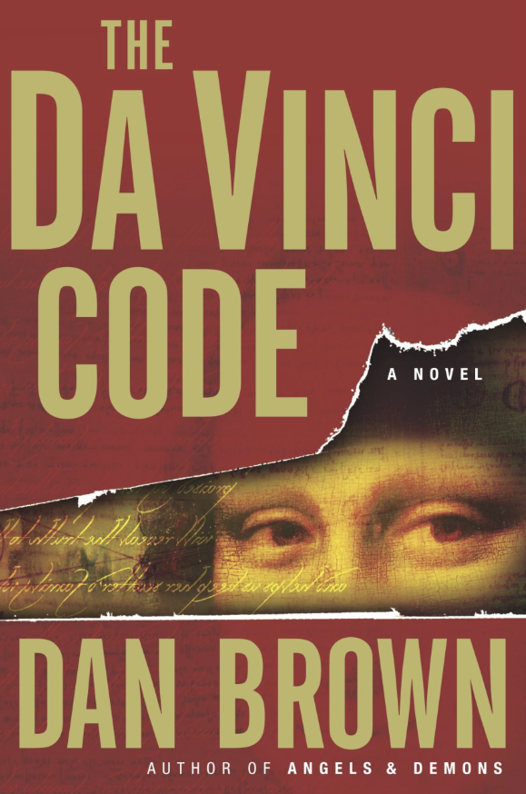
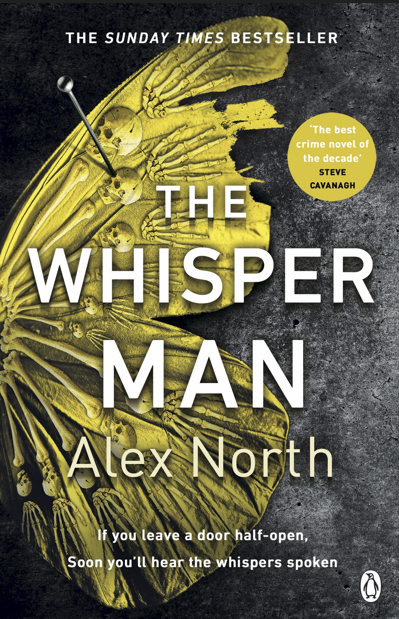

Follow the Clues: Mystery
There is nothing quite like the thrill of a perfectly plotted mystery. Whether it’s a dusty cold case, a closed-door murder, or a narrator you simply cannot trust, this genre is all about the twists, the turns, and the deeply satisfying moment when all the puzzle pieces finally click into place.
What makes the mystery genre so uniquely addictive is that it turns you, the reader, into an active participant. You aren't just passively watching a story unfold; you are an armchair detective hunting for clues, second-guessing the characters, and trying to outsmart the author before the final chapter. It is the ultimate interactive reading experience.
Mystery is a massive umbrella that covers everything from cozy amateur sleuths baking deadly muffins in small towns, to terrifying, high-stakes suspense that will keep you up way past your bedtime. To help you find the exact vibe you are looking for, I've broken down my top recommendations into three very distinct subgenres below. Grab a magnifying glass (or just a cup of tea) and let's find your next case!
Detective Fiction
This is the classic whodunit, the very foundation of the genre. Detective mysteries usually feature a brilliant professional investigator or a highly observant amateur sleuth trying to solve a specific crime. The joy of these books is in the puzzle itself—following the breadcrumbs, interviewing an eccentric cast of suspects, and dodging cleverly placed red herrings.
Whether you prefer the charming, tea-drinking atmosphere of a cozy mystery or the gritty, tense environment of a hardboiled police procedural, these stories always promise one very important thing: closure. There is a deep, fundamental satisfaction in watching a chaotic crime be neatly solved, with all loose ends tied up by the brilliant mind leading the charge.

The Thursday Murder Club
In a peaceful retirement village, four unlikely friends meet weekly to investigate unsolved murders. But when a brutal killing takes place right on their doorstep, the club suddenly finds themselves in the middle of their first live case. It is incredibly clever, laugh-out-loud funny, and features characters you will absolutely fall in love with.
Get the Book
A Good Girl's Guide to Murder
For her senior capstone project, Pip decides to investigate a closed local murder case from five years ago. But as she digs deeper, she realizes the real killer might still be out there and they want her to stop asking questions. It's a fast-paced, addictive mystery told through interview transcripts, log entries, and brilliant amateur sleuthing.
Get the Book
The 7 1/2 Deaths of Evelyn Hardcastle
If you love a sprawling English manor filled with eccentric, wealthy suspects, this one is for you. The twist? The main character wakes up every day in the body of a different guest, and he must solve the murder of the host's daughter to break the time loop. It is a dizzying, highly original locked-room mystery that will keep you guessing until the very last page.
Get the BookPsychological Mystery
Psychological mysteries dive deep into the messy, complicated minds of the characters. These stories often feature unreliable narrators, deeply buried secrets, and mind games that make you question what is actually real. They are less about the physical clues left at a crime scene and more about the dark psychology of human nature.
While a classic detective novel asks "who did it?", a psychological mystery often asks "why did they do it?" or "are they really going crazy?". These books specialize in creeping dread, domestic suspense, and slow-burn tension that gets right under your skin. If you love a jaw-dropping twist that forces you to flip back to page one just to see how the author manipulated you, this is your subgenre.

The Silent Patient
Alicia Berenson's life seems utterly perfect until she shoots her husband five times in the face and never speaks another word. A criminal psychotherapist becomes dangerously obsessed with uncovering her motive and breaking her silence. This massive bestseller has one of the most jaw-dropping, masterfully executed twists in modern thriller history.
Get the Book
We Were Liars
A beautiful, privileged family spends every summer on their private island, but beneath the sparkling surface lies a dark web of secrets, lies, and a terrible accident the main character can't quite remember. This atmospheric, beautifully written book builds a creeping sense of dread leading up to a legendary, jaw-dropping twist that you will be thinking about for days.
Get the Book
The Girl on the Train
If you love toxic relationships, domestic suspense, and narrators you can't trust, you have to read this. A deeply troubled commuter witnesses something shocking from her train window and injects herself into the investigation of a missing woman. It is a gripping, fast-paced read exploring memory, addiction, and the dark secrets hidden behind suburban doors.
Get the BookThrillers
Thrillers are all about pacing, adrenaline, and pure cinematic entertainment. While a traditional mystery is about solving a crime that already happened, a thriller is usually a race against the clock to stop a disaster, catch a killer on the loose, or escape a terrifying situation. Expect high stakes, constant danger, and chapters that end on massive cliffhangers.
These are the ultimate "just one more chapter" books. Authors in this space are masters of manipulation, throwing their protagonists into impossible situations and ratcheting up the tension until you can practically feel your own heart pounding. If you want a fast-paced, edge-of-your-seat reading experience that feels exactly like watching a summer blockbuster movie, grab one of these.

The Housemaid
A woman with a criminal past gets a lucky break when she is hired as a live-in housemaid for a wealthy, glamorous family. But she soon realizes her employers are hiding dark, dangerous secrets, and her bedroom door only locks from the outside. It is an unputdownable, binge-worthy thriller that will have you flying through the pages in a single sitting.
Get the Book
The Da Vinci Code
When a murder at the Louvre reveals a bizarre trail of cryptic clues, symbologist Robert Langdon is thrown into a breathless race across Europe. He must decode centuries-old secrets hidden within the works of Leonardo da Vinci before a shadowy society can silence him forever. It is the ultimate fast-paced, puzzle-solving thriller that perfectly blends history, art, and non-stop action.
Get the Book
The Whisper Man
If you are drawn to the dark, procedural elements of tracking serial killers, this will give you actual chills. Decades after a notorious killer was caught, a new string of disappearances suggests someone is perfectly mimicking his terrifying methods. It balances a deep, emotional family story with a seriously creepy, edge-of-your-seat game of cat and mouse.
Get the Book